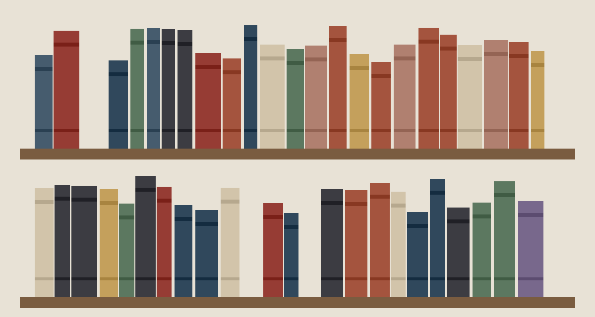

Why the Humble Paperback Changed Reading
For most of the history of printed books, owning one was a statement. Books were bound in leather or cloth, priced for libraries and the comfortable classes, and built to last on a shelf rather than to travel in a coat pocket. The paperback changed that arrangement quietly, and then all at once.
Cheap editions had existed for centuries in the form of pamphlets, chapbooks and serialised fiction, but they were usually treated as disposable. What changed in the twentieth century was the idea that a serious book, a novel or a work of history, could be printed in a small format, bound in card, and sold for the price of a packet of cigarettes, without any loss of dignity to the text inside.1

A format built for movement
Publishers understood early that the new format was not simply a cheaper version of the old one. It was a different object with a different life. It could be read on a train, folded back on itself, lent to a friend and never returned. Railway stations, newsagents and later supermarkets became bookshops by accident, and readers who would never have crossed the threshold of a traditional bookseller found themselves browsing between the magazines and the sweets.
This mattered for writers as much as readers. A book that sold for a fraction of its hardback price needed to sell in far greater numbers to earn its keep, and so publishers began to think about audiences in new ways. Covers became louder. Series design gave readers a reason to trust an unfamiliar title because it sat alongside others they already liked. The spine became a kind of advertisement.
The paperback did not lower the value of books. It lowered the cost of finding out which ones you valued.
Critics worried, as critics always do, that cheapness would cheapen the reading itself. There were complaints about brittle paper, about pages that yellowed in a few years, about glue that cracked in the cold. Some of those complaints were fair. But the larger effect was an enormous widening of who got to read what, and when.
What it means now
Today the paperback sits alongside the e-book and the audiobook rather than against them. Each format answers a slightly different question about where and how people want to read. Yet the paperback's central lesson still applies: the easier a text is to carry and to open, the more likely it is to be read. Design choices that seem merely practical, such as the size of a page, the weight of a font or the width of a column of type, end up shaping habits for a lifetime.
That is also why reading on screens remains contested. A web page can be as portable as any paperback, yet it often arrives wrapped in banners, pop-ups and autoplaying video. The text is there, but it has to compete for attention with everything around it. Tools that strip the page back to its words are, in a sense, doing what the paperback did: removing friction between a reader and the thing they came to read.
Whether that matters to you probably depends on how you read. Some readers skim, some linger, some reread the same paragraph three times before moving on. None of those habits is wrong. But all of them are easier when the page is calm, the line length is comfortable and the type is large enough to rest the eyes. The paperback taught publishers that lesson nearly a century ago, and it is worth remembering every time we open a cluttered page and wish it would simply get out of the way.
In the end, the story of the paperback is less about paper than about permission: permission to read casually, to read anywhere, and to own books without ceremony. It is a story about access, and access is a design problem as much as an economic one.
- Prices varied by country and decade; the comparison is illustrative. ↩